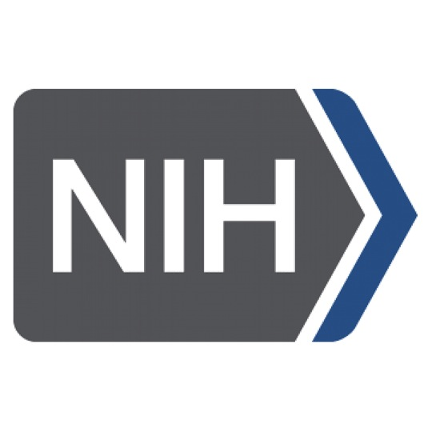
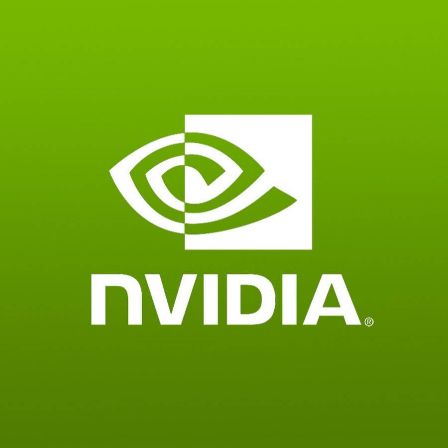

NIH NIMH · 2026-2031R01MH112558: MyAPS
R01MH112558
NIHNIMHEmotion AIBrain HealthMPI
Development and validation of an AI platform for generating emotional pictures.
NSF · 2026
Brain × AI 101
NSF AI Supplement
NSFEducationNeuroscienceAIPI
A neuroscience-AI curriculum toolkit for high school AI education.
NIH NIGMS · 2024-2029
AI Passport for Biomedical Research
R25GM155478
NIHNIGMSAIEducationCo-I
Digital experiential learning community for upskilling biomedical researchers in AI.
NSF · 2023-2027
Brain-Informed Bidirectional Deep Emotion Inference
NCS-FO-2318984
NSFEmotion AIDeep LearningBrain HealthPI
Brain-informed, goal-oriented deep learning for modeling human emotion.
NIH NIA · 2023-2028
Walking Exercise and Neuromodulation
R01AG081477
NIHNIAAgingNeuromodulationCo-I
Cognitively engaging walking exercise and neuromodulation to enhance brain function in older adults.
UF · 2023
AI for Critical Care Hypotension Treatment
DRPD-ROF2023
UFAICritical CareKidneyCo-I
Learning optimal treatment strategies for hypotension in critical care patients with acute kidney injury.
NIH NIAID · 2022-2027
Radionuclide Toxicity Evaluation
P01AI165380
NIHNIAIDMedical ImagingDosimetryCo-I
Multi-scale evaluation and mitigation of toxicities following internal radionuclide contamination.
 Oracle · 2022
Oracle · 2022Explainable AI for Alzheimer's from Retinal Imaging
Oracle Research Award
OracleXAIAlzheimer'sRetinal ImagingPI
Explainable AI methods to detect early signs of Alzheimer's disease from retinal imaging.
NIH NIA · 2021-2026
MRI-Derived tDCS Precision Dosing
RF1/R01
NIHNIAMRItDCSMPI
MRI-derived electric field models for tDCS augmented cognitive training.
NSF · 2021-2026
Trustworthy AI for Neurodegenerative Diseases
IIS 2123809
NSFXAINeurodegenerativeHealthCo-PI
Trustworthy and explainable AI for neurodegenerative disease applications.
NIH NIAAA · 2021
Southern HIV and Alcohol Data Repository
U24AA029959
NIHNIAAAHIVDataCo-I
Biomedical data repository for the Southern HIV and Alcohol Research Consortium.
NIH NIAAA · 2021
Gut-Brain Axis in HIV
P01AA029543
NIHNIAAAHIVGut-BrainCo-I
Interventions to improve alcohol-related comorbidities along the gut-brain axis in persons with HIV.
NIH NIAAA · 2021
SHARE Program
P01AA029547
NIHNIAAAHIVBehavioralCo-I
Translational behavioral science to improve self-management of HIV and alcohol use among emerging adults.
NIH NIMH · 2021
Attention Biases to Threat
R01MH125615
NIHNIMHBrain ImagingAttentionCo-I
Computational modeling and multimodal brain imaging of attention biases to threat.
NIH NINDS · 2021
Automated Parkinsonism Imaging Differentiation
U01NS119562
NIHNINDSMRIParkinsonCo-I
Web-based automated imaging differentiation of Parkinsonism.

NVIDIA · 2020VCA-DNN
AI Catalyst Award
NVIDIAAIEmotion AIVisualPI
Neuroscience-inspired artificial intelligence for visual emotion recognition.
UFII · 2020
Biology and Cognition Inspired Deep Learning
UFII
UFDeep LearningCognitionAIMentor
Biology and cognition inspired deep learning for emotional information processing.
NSF · 2019-2024
Multi-Level Connectivity of Brain Dynamics
IIS-1908299
NSFBrain DynamicsConnectivityImagingPI
Modeling multi-level connectivity for characterizing and understanding brain dynamics.
UFII · 2019
Diabetic Retinopathy Multimodal Learning
UFII Junior SEED
UFMedical ImagingNLPDiabetic RetinopathyCo-PI
Multimodal visual-text learning from clinical narrative and images for early diabetic retinopathy detection.
UFII-CTSI · 2019
Cardiotoxicity Prevention in Cancer
UFII-CTSI Pilot
UFCancerGenomicsMultimodalCo-PI
A multimodal approach leveraging genomics, images, and clinical data to prevent cardiotoxicity in cancer.
NIH CTSI · 2019
Spinal Cord Stimulation Outcomes
NIH CTSI TL1
NIHUFSpinal CordClinicalMentor
Predicting short- and long-term effects of spinal cord stimulation for clinical practice.
NSF · 2018
Center for Big Learning
CNS-1747783
NSFDeep LearningIndustryIUCRCSenior
Phase I IUCRC University of Florida site for the Center for Big Learning.
UF CTSI · 2018
PrecisionDose
Pilot Award
UFRadiationMedical ImagingPrecision MedicinePI
Personalized radiation dose optimization for multimodal imaging.
NSF · 2016-2018
CRII: Characterizing Brain Dynamics
IIS-1564892
NSFBrain DynamicsModelingImagingPI
Characterizing, modeling, and evaluating brain dynamics from limited data.
ORAU · 2016-2017
Limited Data Brain Modeling
ORAU Powe Award
ORAUBrain DynamicsMachine LearningImaging
Modeling, estimating, and reasoning in limited data brain imaging.